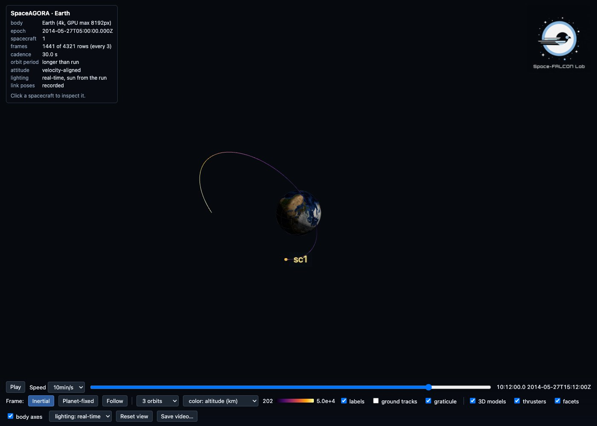
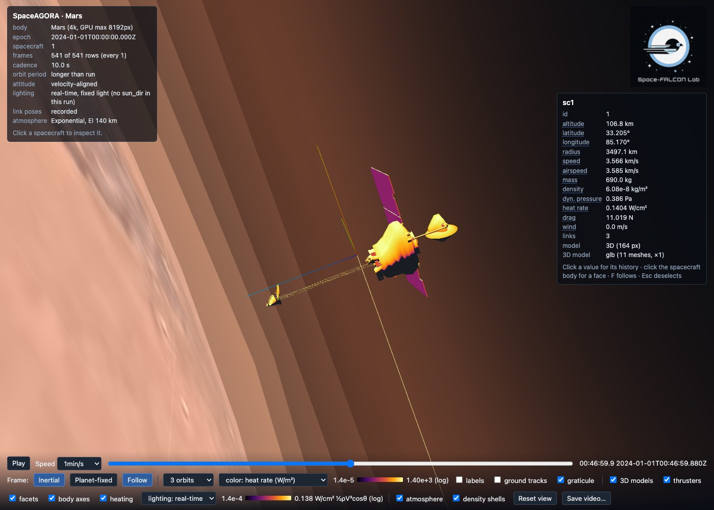
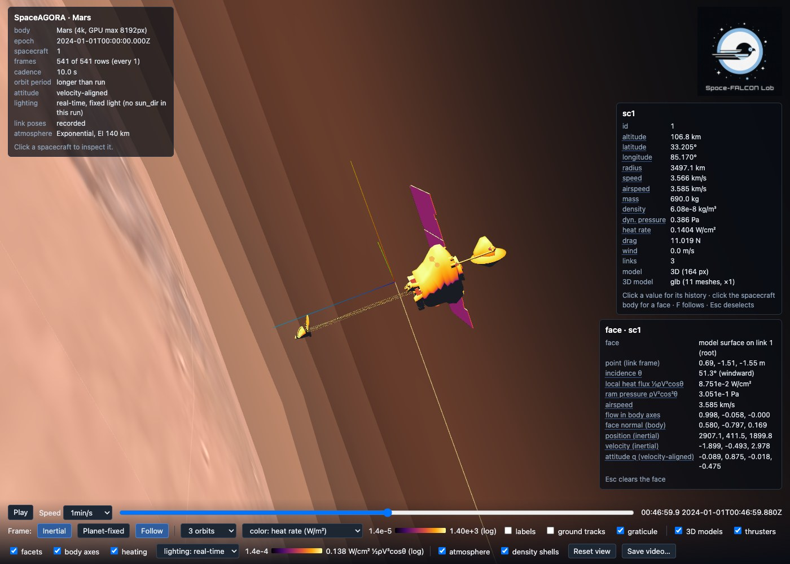

Interactive Visualization
Requires the optional SpaceAGORAVisualizer package; see Install the optional viewer.
The viewer turns saved results into an HTML page: orbit the central body, scrub through time, select a spacecraft and inspect its trajectory. The page opens from disk and can be shared with someone who does not have Julia.
Install the optional viewer
SpaceAGORA writes scene data and portable viewer JSON. The independent SpaceAGORAVisualizer package owns HTML assembly, browser playback and its third-party renderer assets. Install the tested combination in a separate environment from the repository root:
julia --project=. scripts/setup_visualizer.jl .visualizer-env
julia --project=.visualizer-envThen load both packages in Julia:
using SpaceAGORA
using SpaceAGORAVisualizerThe helper pins the companion revision recorded in packages/VisualizerSource.toml and leaves the root project unchanged. You can also install only the viewer in another Julia environment to inspect exported JSON without loading SpaceAGORA. See the companion's README for that installation and its supported input format.
A simulation can save results and scene data without the viewer installed. export_viewer_payload(prefix; textures=false) converts those saved files into portable *_viewer.json; SpaceAGORAVisualizer.visualize(path) opens the same data as a self-contained HTML file. HTML requests through SpaceAGORA require both packages to be loaded, in either order. A missing viewer produces a clear error before a requested simulation or visualization campaign starts.
For a reusable definition and a single returned run handle, start with Define, run and inspect a mission.
Make your first page
After completing the Quickstart, run this from the repository root to put the no-GRAM example and its viewer in a dedicated output directory:
using SpaceAGORA
using SpaceAGORAVisualizer
SpaceAGORA.run_cli(["run", "--example=AGORA_Earth_NoGRAM.jl", "--visualize",
"--output-dir=output/viewer-earth"])Open output/viewer-earth/simulation_results_viewer.html under the repository. The same directory contains the normal results and simulation_results_scene.json. Repeating the command overwrites those files. Choose another --output-dir to keep an earlier run. See Simulation Outputs for the full output behavior.

In this screenshot the trail is coloured by altitude with the trail-colour selector. The run has no atmosphere, so the default heat-rate colouring has nothing to show.
For a configuration you already built:
run_simulation(args; visualization=true)The page is written beside the results as <results_directory>/simulation_results_viewer.html, using args.simulation_settings.results_directory.
For a completed run that already has its scene sidecar:
export_visualization("output/viewer-earth/simulation_results"; max_frames=2000)
SpaceAGORA.run_cli(["visualize", "--run=output/viewer-earth"])export_visualization takes the results prefix: <results_directory>/simulation_results, with no file extension. The CLI visualize --run= accepts either that prefix or the results directory.
with_visualization_scene(args, true) sets the sidecar flag when preparing a configuration. This saves the extra fields and sidecar; use export_visualization afterwards to build the HTML page. Existing runs without a sidecar need their configuration to create one, or use the standalone data-file viewer below.
Read the page
- Drag to orbit, scroll to zoom, and use the timeline to play or scrub.
- Click a spacecraft marker or visible model to select it. Its selection panel opens at the top right. Press F to follow it; Escape clears the selection.
- Switch between inertial and planet-fixed views. Ground tracks follow the body's rotation sampled from the run's own frame model.
- Nearby spacecraft show link boxes and articulated parts. A run without attitude data uses an illustrative velocity-aligned orientation.
- Quaternions are scalar-last. Instantaneous altitude is geodetic;
sc1_periapsis_altitudeand the default ensemble color are spherical periapsis altitude, as defined on the outputs page.
The saved heat-rate history comes from the simulation. Surface heating colors are an illustrative viewer overlay, not an additional thermal solution. Viewer-derived dynamic pressure uses its available velocity approximation; use the verified study diagnostics for quantitative atmosphere-relative pressure comparisons.
Plot another saved value
Click a quantity's name or value in the selection panel to plot its history. Altitude, speed, mass, density, heat rate, drag and wind already have clickable rows when the corresponding data is available.
To add the saved sc1_periapsis_altitude column, pass its suffix without the spacecraft prefix. It contains osculating spherical periapsis altitude in metres:
export_visualization("output/viewer-earth/simulation_results";
channels=[(column="periapsis_altitude", label="Spherical periapsis altitude",
unit="m", digits=1, log=false)])Reopen the generated page, select a spacecraft and click its Spherical periapsis altitude row in the selection panel. Scrubbing the timeline updates the displayed value. Channel names come from the saved results headers; see Simulation Outputs for names, units and definitions.
Each spacecraft must have the corresponding column (sc1_periapsis_altitude, sc2_periapsis_altitude, and so on). If any column is absent, the channel is omitted without a message. If its row does not appear, check the spelling and the headers for every spacecraft in the results table.
Missing values appear as gaps, and interpolation does not bridge a gap. Some plots automatically use a logarithmic axis when their positive values span a wide range. Zeros also appear as gaps on that axis; clear the log checkbox to show them on a linear scale. Negative values disable logarithmic scaling.
If saved rows repeat a spacecraft's state after impact or touchdown while the run continues, those held quantities plot as flat segments. The viewer uses the saved rows and does not automatically end a history at deactivation.
Channel values use the same saved-row decimation as the trajectory. Choose enough max_frames to retain the features you want to inspect.
Size and optional detail
export_visualization("output/viewer-earth/simulation_results";
max_frames=2000, data_budget_mb=150.0,
texture_resolution="4k", trail_orbits=3, frame=:inertial)The exporter decimates saved rows to the frame and data limits. The page reports its resulting cadence. Smaller textures or textures=false reduce the page size; no texture changes the recorded trajectory. Export defaults to texture_resolution="4k". Earth, Mars and Moon also include 8192 x 4096 textures: opt in with texture_resolution="8k" or select the largest available tier with :best. Venus and Titan fall back to 4k. An 8k image has four times the decoded pixels of 4k, and its embedded JPEG also makes the HTML larger. The companion standalone builder defaults to --textures none. To embed local textures, pass --textures 4k or --textures 8k with --textures-dir /path/to/catalog. That directory must contain manifest.toml and the selected image files; the builder does not download textures.
STL, OBJ and uncompressed GLB models can replace link boxes:
export_visualization("output/viewer-earth/simulation_results";
models=Dict(1 => "data/scene/models/iss_nasa_3d_resources_b.glb"),
model_scale=2.4, model_rotation_deg=Dict(1 => (-90, 0, -90)))Match the spacecraft ID, scale and orientation to your model. The model is display geometry; it does not replace the aerodynamic or structural model. data/scene/models/README.md and data/scene/textures/manifest.toml record asset sources. Bundled mission display meshes include Apollo Lunar Module, Cassini with and without Huygens, CYGNSS, Magellan and Mars Odyssey, in addition to ISS. Supply the corresponding GLB path through models; models are embedded only when selected. Their model coordinates need mission-specific scale and rotation. These six models and three higher-resolution textures add about 35.6 MB to the checkout. No asset download or native atmosphere library is needed.
Atmosphere displays use density values already saved along the trajectory. The sidecar automatically adds an altitude profile for the exponential and piecewise exponential models and for the native-free GRAMGridAtmosphereModel. These evaluations read the model without advancing a sampler or changing its epoch.
Fixed-grid profiles use the equator and longitude zero, over the overlap between the grid's altitude coverage and zero to 1.5 times the entry-interface altitude. A grid that does not cover the equator has no equatorial profile. The viewer draws no density shells outside the sampled altitude range. A global density map is included only when the grid covers every sampled latitude; regional grids are not stretched over the globe. The default map height is 0.6 times the entry interface, bounded by the grid's altitude range, and the sidecar records that height. These displays describe the stored snapshot, not a newly generated atmosphere at the simulation epoch.
Native GRAM, hybrid native/surrogate, empirical and custom models keep the entry-interface shell and saved trajectory density without extra export-time queries. Standalone atmosphere_spec(args; sample_model=true, density_params=...) remains an explicit advanced operation that can change such a model's state; scene export never opts into it.
Toolbar and keyboard
The toolbar holds the playback controls, the Inertial and Planet-fixed frame buttons, Follow, the trail length and trail colour selectors, and one checkbox per overlay: labels, planned paths, reference ghosts, ground tracks, graticule, 3D models, thrusters, plumes, facets, body axes, heating, dust, atmosphere, density shells and density map. An overlay whose data is absent from the page hides its checkbox. The lighting selector and Save video… are described below; Reset view returns the camera to its starting position.
| Key | Action |
|---|---|
| Space | Play or pause |
| Left or Right arrow | Step back or forward by one speed unit |
| F | Follow the selected spacecraft |
| Escape | Clear the selected face, then the selected spacecraft |
Trails can be coloured by heat rate, dynamic pressure, density, altitude or speed. Heat rate, dynamic pressure and density use logarithmic colour scales; altitude and speed use linear scales.
Close-up models, thrusters and plumes
When a spacecraft's bounding radius covers a few pixels, its marker gives way to the assembly recorded in the sidecar: one box per link from Link.dims, placed by the saved attitude quaternion. Runs without orientation state use an attitude with body +x along the velocity and body +z toward nadir. Non-root links follow the link_pose columns when the run saved them, otherwise their configured pose. Thrusters are cones with the apex at the thruster location, pointing along the thrust direction; facets are translucent squares of the facet area with their normal drawn; the body axes are red, green and blue for x, y and z. Each has a toolbar toggle.
A model passed through models replaces the boxes; the glyphs stay. Parts that the file holds in another position can be posed with model_articulations, which takes the same specification as articulate_triangles, so the drawn model and an articulated aerodynamic mesh agree:
export_visualization("output/viewer-earth/simulation_results";
models=Dict(1 => "data/scene/models/iss_nasa_3d_resources_b.glb"), model_scale=2.4,
model_articulations=Dict(1 => [
(region=(x_min=10.0,), axis=(0.0, 1.0, 0.0), angle_deg=90.0, pivot=:centroid)]))Each articulation names a region (an axis-aligned box in model units with x_min, x_max, y_min, y_max, z_min and z_max; a missing bound is unbounded), a rotation axis in model axes, an angle_deg, and a pivot: a point on the axis in model units, or :centroid for the centre of the selected vertices' bounding box. Vertices inside the region rotate.
Thruster firing levels saved with the run (the thruster_level field, see Simulation Outputs) drive a plume on every thruster: an additive, flickering cone pair along the thruster's direction, long and orange-white for a main engine and short and blue-white for an attitude jet, with reach and brightness set by the rated thrust and by the level through a fractional exponent, so a jet firing a fraction of a percent of its rating still reads. Level 0 draws nothing and dims the static cone. The selection panel lists a thruster k level row per thruster; click it to plot the firing history. Plumes are display glyphs driven by the recorded levels and carry no exhaust physics.
Heating overlay and face inspection
With density and velocity in the frames, the heating toggle colours every link box and model face by ½ρV³cosθ on an inferno scale, logarithmic over three decades below the run's peak. θ is the angle between the outward face normal and the velocity relative to the rotating atmosphere (inertial velocity minus ω × r). This display approximation does not subtract atmospheric winds. Faces turned away from the flow stay cold. The legend reads W/cm². This is a viewer overlay built from the saved density and the drawn geometry, not the simulation's thermal solution; sc1_heat_rate remains the saved stagnation value.

A Mars aerobraking pass with drag, drawn with the NASA Mars Odyssey model from data/scene/models/ (NASA/JPL/Eyes on the Solar System, NASA 3D Resources).
Click a face of a drawn assembly to inspect it. The face panel reports the incidence θ in degrees, the local heat flux ½ρV³cosθ in W/cm², the ram pressure ρV²cos²θ in Pa, the airspeed, the flow direction in body axes, the face normal in body axes and the spacecraft's inertial position and velocity, all updating as the timeline plays. Each row plots like any other channel. Escape clears the face selection before the spacecraft selection.

Sun lighting and path tracing
When the run saved the Sun direction (the sun_dir field, written when the run's ephemerides can locate the Sun), the page lights the scene from it: a directional sun with a shadow map fitted to the followed vehicle, and an exposure measured from the ground texture's mean albedo and the sun elevation at the site rather than assumed, so the surface renders at the same brightness every time the page opens. Without sun_dir the page uses a fixed light without shadows and says so in its information panel.
The lighting selector always offers lighting: real-time. The default self-contained page embeds its renderer and stops there. A page whose import map includes the optional path tracer also offers lighting: path traced when paused. This is available in the standalone builder's --cdn mode and pages made with SpaceAGORAVisualizer.jl/viewer/build_cdn_page.py unless --no-pathtracer is set: the GPU path tracer loads on demand, refines the still image whenever playback is paused and hands back to real-time rendering while the timeline moves. When the tracer cannot load, the selector offers real-time lighting only and the browser console records why. Lighting is a rendering choice and changes no saved quantity.
Reference ghosts and planned paths
references draws reference trajectories as translucent ghosts of a flown spacecraft on the run's own timeline: a SPICE reconstruction, a telemetry record or a plan. Each entry is a NamedTuple or Dict with name, t_s (elapsed seconds from the run epoch, non-decreasing), pos_m (3 × N inertial metres) and optionally vel_mps (3 × N), q (4 × N scalar-last body-to-inertial attitude; velocity-aligned when absent), target (1-based index of the spacecraft whose geometry and model the ghost copies, default 1), color (hex string), opacity (0 to 1, default 0.45) and trail (draw the whole reference line, default true):
export_visualization("output/viewer-earth/simulation_results";
references=[(name="reconstruction", t_s=t, pos_m=r, vel_mps=v,
target=1, color="#ffcc66", opacity=0.5)])Times and positions retain Float64 precision during export. The displayed separation still depends on the reference sampling and interpolation. The flown spacecraft's selection panel shows the separation from each ghost that refers to it as a vs name row in km. Times outside the reference table hide the ghost.
paths overlays reference polylines. Each entry has name, points_m (3 × N metres), frame (:inertial; :rtn for the radial, transverse and normal frame of spacecraft target; or :body for that spacecraft's body frame) and optionally color and dashed. RTN and body paths are rebuilt every frame from the target's saved state, so a planned approach stays attached to a moving target:
export_visualization("output/viewer-earth/simulation_results";
paths=[(name="approach", points_m=plan_m, frame=:rtn, target=2, dashed=true)])Robot arms
A spacecraft carrying the compliant robot-arm chain records the arm_pose field: per arm link, the link centre of mass relative to the spacecraft in inertial metres and the link's inertial attitude quaternion. The page draws one cylinder per link along the link's own vector, a joint sphere at its origin and a red tip at the end effector, recovering the joint origin each frame from the saved centre of mass and quaternion. The arm group sits at the spacecraft without the body rotation, because the poses are already inertial.
Landing dust
With the default save-field list, a run with the plume-surface effector saves the seven sc{i}_plume_* columns described in Plume interaction and listed in Simulation Outputs. The page reads them into its plume block and, with the dust toggle, draws regolith blown off the surface by the descent engine: a particle sheet fed by the saved erosion rate, ejecta speed, eroded mass and engine height, a ground haze disk and a scour mark. Dust sits on the terrain radius when a site bundle is exported and on the reference globe otherwise. It illustrates the saved diagnostics; the erosion closure itself is described on the plume page.
Save a video
Save video… opens a dialog with the time range, the playback speed in simulated seconds per second of video, the frame rate (24, 30 or 60 frames per second) and the output size (the canvas size, 1280 × 720, 1920 × 1080 or 2560 × 1440), and shows the resulting video length and frame count. The page renders the range frame by frame, encodes it as H.264 with the browser's WebCodecs encoder and muxes an MP4 in memory before offering the download; the live view stands still while it records. Record WebM (10 s) is the fallback for browsers without an H.264 encoder: it records ten seconds of the live playback with MediaRecorder. Both files are produced in the browser, and nothing leaves the machine.
Ensembles
result, page = run_monte_carlo_visualization(
seed -> build_args(seed), 1:20, "output/campaign"; threads=4)Supply your existing build_args(seed) configuration builder. Each sample writes to its own results and checkpoint directories, including when the builder supplies a shared checkpoint root. The page compares the trajectories and colors them by final spherical periapsis altitude. Supply scalar and scalar_name for another quantity. An existing campaign can be exported with export_ensemble_visualization("output/campaign").
Standalone files
python3 <SpaceAGORAVisualizer-checkout>/viewer/build_standalone.py --out output/viewer.htmlOpen the page and choose a CSV or JSON file, body and epoch. CSV accepts SpaceAGORA result columns or time,x,y,z with optional velocity and quaternion columns. Check units and the inertial-frame convention before interpreting the view. The standalone rotation is an approximation; it does not replace the frame metadata saved by a simulation.
The default page embeds its renderer and assets and makes no network requests. Imported models with external resource URLs can request them. For a host that refuses embedded data: scripts, SpaceAGORAVisualizer.jl/viewer/build_cdn_page.py rewrites an exported page to load the pinned three.js and mp4-muxer from cdn.jsdelivr.net with the renderer modules inlined; the built page lists its network hosts and third-party notices in its footer, and adds fonts from Google Fonts only with --fonts. See the companion renderer guide for renderer development, module layout and licensing. Landing dynamics and plume-surface physics are separate from the viewer: the page only draws what the run saved.
Regional terrain in exported pages
For a completed Moon run with a scene sidecar, add a local terrain bundle:
export_visualization("output/moon-run/simulation_results";
terrain="output/terrain/site.json", terrain_max_grid=512)Reopen output/moon-run/simulation_results_viewer.html. The site bundle contains site.json, the named DEM metadata and .f32 samples, and optional JPEG tiles. The Moon download tools and legacy imagery converter live in scripts/dev/terrain/; docs/src/user/lunar_imagery_sources.md explains their Python requirements, commands, data sources and output layout. Downloading assets is a separate step. Existing local bundles export without a network connection or native GRAM.
The local site bundle follows load_site_terrain: regional DEMs in priority order, explicit common reference radius, planetocentric latitude, east-positive longitude and little-endian Float32 metre heights at cell centres. Export uses the canonical loader, keeps the original outer edges, and samples reduced grids uniformly at their new cell centres. terrain_max_grid must be an integer in 1:2048. The shared reduction factor can produce a singleton row or column. The result approximates the source surface; site.height_m records the source query, while markers and radar queries use the exported approximation.
The first covering grid supplies the height, with the canonical zero fallback outside all grids. Longitude wraps without iteration. Radar clearance is radial: norm(position_body_m) - reference_radius_m - terrain_height_m. The terrain radius comes from the DEM, including for dust placement; scene planet metadata is preserved. If the scene globe is an ellipsoid or uses another radius, the terrain boundary can differ from that globe. The run and terrain must refer to the same body. Use a consistent reference sphere to align their datums. Even with matching radii, a visible rim is expected where the regional terrain meets the reference globe at a different height. Export performs no datum conversion.
Select a spacecraft and read its height above terrain in the selection panel. With a single spacecraft, Follow also selects it. This value is a radial clearance based on the exported grid, not the saved geodetic altitude. Zoom toward the site to inspect the local imagery mesh.
Imagery is optional. With no imagery, height queries and the height-above-terrain readout remain available, while the normal globe is drawn. With a quadtree, every declared local JPEG is embedded. Missing declared indices or tiles are errors. Each tile has level, x, y, file, and positive m_per_px; the root tile is required and sparse deeper levels inherit available ancestors. The index uses a regional root, integer tile_px, and matching max_level. Source, attribution and resolution metadata accompany the imagery.
To bound export size, the site accepts at most 64 DEMs and 128 MiB of DEM samples, with 1 MiB per JSON document. Imagery accepts at most 8192 tiles through level 20, 4096 pixels per side, 8 MiB per JPEG, and 128 MiB total. Tile dimensions are checked against their JPEG header. Paths, including symlinks, must resolve inside the site or imagery directory. Export neither downloads terrain nor changes propagation, touchdown or atmosphere state.
Follow mission segments
Runs created with operational segments carry their executed segment history in the portable payload. In the standalone viewer, select a segment or a transition within the saved playback range to move the timeline to that point. Transitions outside that range remain listed but cannot be selected for playback. The current-segment label changes as you play or scrub through the run. At a shared boundary it names the incoming segment.
The history records actual transition times and reasons, including early stops. It does not infer events from a trajectory or display unexecuted segments as completed. Old payloads without mission history retain the usual timeline. See Mission Workflows for segment definitions and command actions.